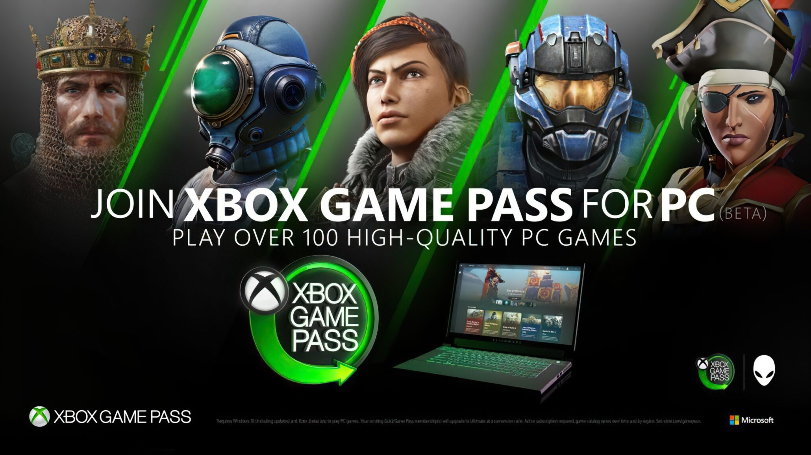
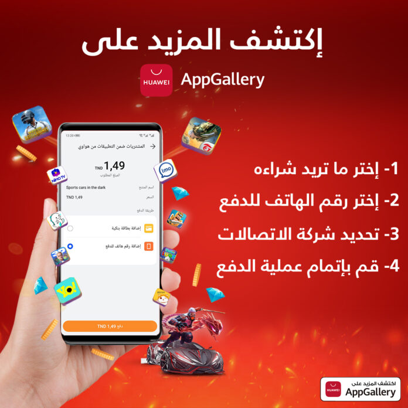
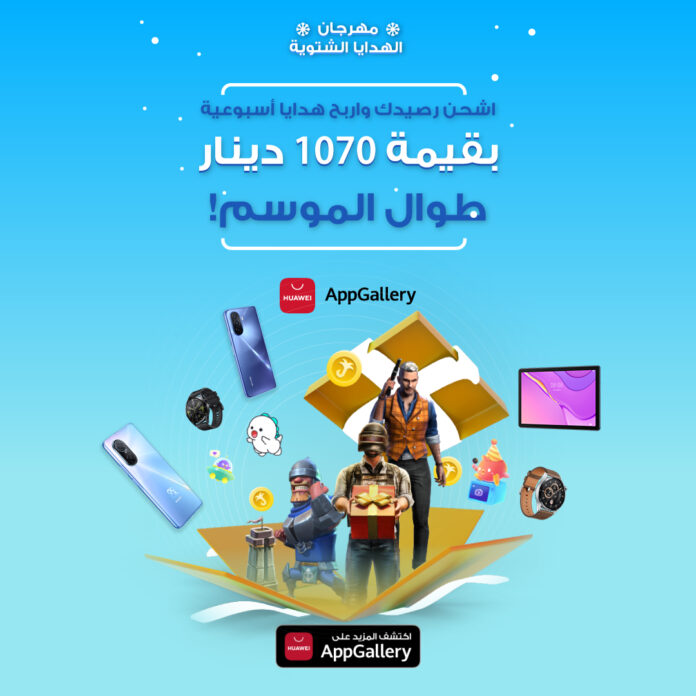

Derniérement

12/04/23
Xbox annonce le lancement du PC Game Pass en Tunisie
Xbox annonce le lancement du « PC Game Pass » ce mercredi 12 avril 2023en Tunisie et dans 40 pays . De ce fait, les joueurs de Tunisie peuvent accéder dorénavant à des centaines de jeux et jouer avec leurs amis et leur famille, élargissant ainsi la communauté Xbox à un plus grand nombre de joueurs à travers le monde.
Xbox propose aux Tunisiens une offre spéciale
« En février, nous avons présenté en avant-première le PC Game Pass dans 40 nouveaux pays, et la réaction a été formidable « , a déclaré Jerret West, CVP Gaming Marketing, Xbox. » Nous remercions tous les joueurs qui se sont prêtés au jeu pour tester l’expérience et qui nous ont aidés à façonner la version d’avant-première. Aujourd’hui, nous sommes heureux d’annoncer que tous les joueurs de ces pays peuvent désormais rejoindre la communauté PC Game Pass. »
Des centaines de jeux sur Windows depuis l’application Xbox sur PC Avec le PC Game Pass, les joueurs ont un accès immédiat à une bibliothèque de centaines de jeux sur Windows depuis l’application Xbox sur PC. Cela inclut les nouveautés Xbox Game Studios dès le premier jour de leur lancement, les jeux mythiques de Bethesda, une adhésion à EA Play et des avantages réservés aux membres de Riot Games dont League of Legends et Valorant. Les membres peuvent jouer à des jeux tels que Forza Horizon 5, Sea of Thieves, Grounded, Age of Empires IV, FIFA 22 et bien d’autres, ainsi qu’à de nouveaux jeux qui sont régulièrement ajoutés, tels que Minecraft Legends, prévu pour le 18 avril, Redfall, pour le 2 mai, et Starfield, pour le 6 septembre.

12/04/23
Sousse : AppGallery, partenaire officiel de Tunisia Game Show
En tant que partenaire officiel du Tunisia Game Show(premier salon E-sports en Tunisie) prévu du 15 au 20 avril 2023 à la foire internationale de Sousse, AppGallery, la plateforme de distribution d’applications de Huawei, marquera sa présence à cet événement d’envergure à travers le plus grand stand. Lequel deviendra à n’en point douter le lieu incontournable des mobile gamers participants.
A cette occasion, les participants vivront l’expérience mobile gaming via AppGallery, et se régaleront à travers un espace d’exposition et de découverte des derniers produits Huawei disponibles sur le marché tunisien :
smartphones, objets connectés, produits audio, laptops, tablettes… L’espace d’exposition sera marquée également par la présence du nouveau smartphone HUAWEI nova 10 SE, marqué par un design innové, un système d’imagerie 108MP, une batterie HUAWEI SuperCharge de 66W et une batterie de 4500mAh.
Le stand AppGallery, lieu incontournable des mobile gamers participants Par ailleurs, les visiteurs du stand AppGallery auront droit de pleines surprises et gagneront de nombreux cadeaux. Dans ce cadre AppGallery multiplie les avantages aux gamers à travers une multitude de campagnes visant l’encouragement des gamers via un ensemble de cadeaux liés aux téléchargements des jeux et l’achat in-apps.

12/04/23
LG renforce les services de cloud gaming sur ses TV en 2023
LG Electronics enrichit son offre de cloud gaming sur ses téléviseurs 2023 en ajoutant le support 4K (3 840 x 2 160) pour NVIDIA GeForce NOW dans plus de quatre-vingts pays et en lançant le service Boosteroid dans plus de soixante pays.
Un Hub Gaming sur les téléviseurs LG :
Après les ajouts de Blacknut et Utomik en 2022, ces nouvelles options renforcent les services de cloud gaming disponibles pour les utilisateurs de téléviseurs LG.
Grâce à la Quick Card « Jeux » disponible sur WebOS 23, les joueurs disposent désormais d’un véritable Hub Gaming, directement depuis l’écran d’accueil de leur téléviseur, regroupant les fonctionnalités liées au gaming et leur permettant d’accéder à des services tels que GeForce NOW, Utomik, Blacknut, Boosteroid nouvellement lancés, ainsi que Twitch et YouTube Gaming.

Une expérience de jeu personnalisée et optimisée:
Les joueurs peuvent aussi profiter d’une expérience de jeu ultime sur les téléviseurs LG OLED avec des actions ultra-fluide et rapide grâce à un temps de réponse de 0,1 milliseconde (gris à gris). Tous les téléviseurs LG 2023 offrent également une expérience de jeu personnalisée grâce à l’Optimiseur de Jeu, à une grande variété de fonctions de personnalisation et des paramètres d’image spécifiques au genre de jeu.
Les utilisateurs des téléviseurs LG 2023 peuvent désormais profiter des jeux sur GeForce NOW en 4K 60i/s sans téléchargement, installation ou matériel supplémentaire. GeForce Now est également disponible en Full HD (1 920 x 1 080) à 60i/s sur les téléviseurs LG (modèles 2020-2022) fonctionnant sous WebOS 5.0 et supérieur, tandis que la prise en charge des jeux en 4K sur GeForce NOW sera disponible ultérieurement sur certains modèles de téléviseurs 2022.
Savez vous que
12/04/23
Valve se prépare à lancer Counter-Strike 2
L’officialisation est proche, et elle devrait ravir absolument tous les fans de la franchise du FPS multijoueur sur PC opposant une équipe de terroristes à un groupe d’antiterroristes. Plus de 23 ans après sa sortie, Counter-Strike, l’emblématique FPS des studios Valve aura bien une suite, a en croire les rumeurs et indices qui circulent sur la toile.
Plus de 1 400 millions de joueurs en simultané pour CS Go
En effet, ce jeu multijoueur et LAN qui aura marqué toute une génération de joueurs continue jusqu’à présent de battre tous les records d’audience sur la plateforme Steam. Rebaptisée par la suite CS : GO, le FPS a enregistré le 11 mars dernier, un nouveau record de plus de 1 400 millions de joueurs en simultané. Preuve que ce concept qui oppose une équipe de terroristes à un groupe d’antiterroristes n’est pas prêt de faiblir en attirant toujours de nouveaux fans.
Les indices repérées par les joueurs
Ainsi, pas mal de rumeurs circulent depuis plusieurs semaines parmi les membres de la communauté de joueurs qui ont récolté quelques indices sur la plateforme Steam. Par exemple, une mise à jour des pilotes NVIDIA où deux fichiers portant le nom de « cs2 » et « csgo2 », ou encore le post d’un développeur nommé Aquarius qui a aurait repéré des modifications sur Steam, au niveau de l’exécutable « сѕ2.ехе ».
17/04/23
Huawei AppGallery : Améliorez votre expérience gaming sur mobile
Les jeux vidéo font aujourd’hui partie intégrante de notre quotidien, aussi bien sur consoles que sur les smartphones, dont la puissance a fini par atteindre des sommets à travers des configurations techniques toujours plus évoluées.
Afin de profiter au maximum de l’expérience du gaming, Huawei mobile services (HMS) propose désormais aux joueurs Tunisiens, la possibilité d’accéder à des milliers de titres inédits, dont certains très populaires à l’instar de PUBG, Revenge of sultans ou encore YallaLudo disponibles sur AppGallery, la plateforme officielle de distribution d’applications de HUAWEI.
En Tunisie, AppGallery va permettre aux utilisateurs d’effectuer leurs achats au sein même des applications (skins de personnages, diamants, pièces d’or, etc.) et ce, directement en dinar tunisien (TND), de manière transparente. Comment ? Grâce au Direct Carrier Billing (DCB), une méthode de paiement sécurisée. En effet, le DCB permet aux consommateurs prépayés et postpayés d’acheter leurs besoins en utilisant directement le crédit mobile. Des prix intéressants à gagner Alors qu’est-ce que vous attendez pour rechargez votre ligne et jouer une partie de FreeFire endiablée entre amis ? Booster ses compétences au sein même du jeu devient à la fois simple, intuitif et pratique.
